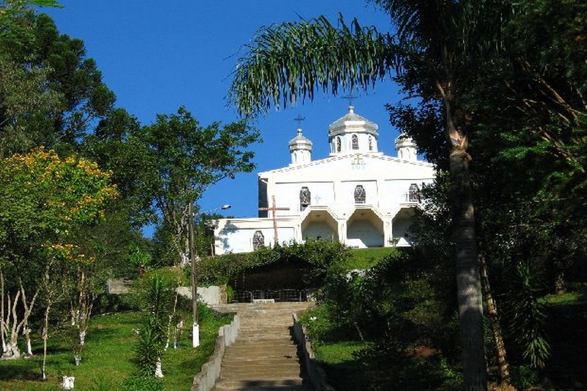
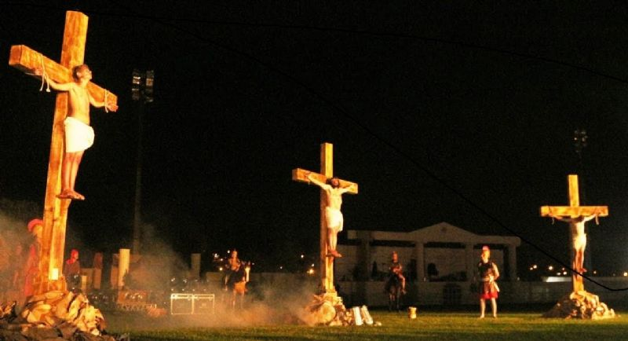
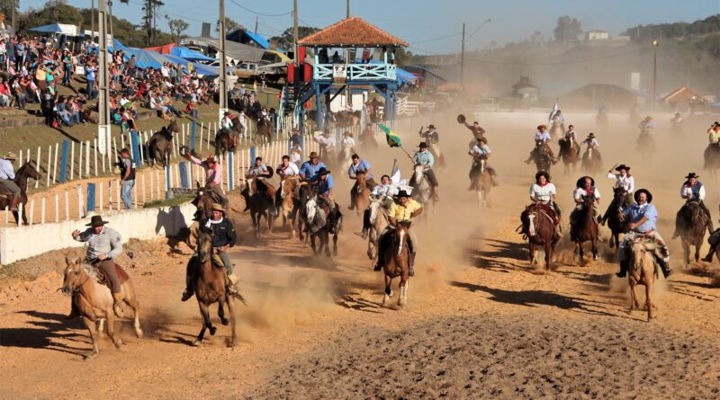
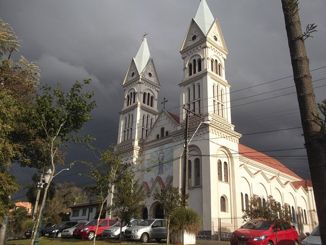
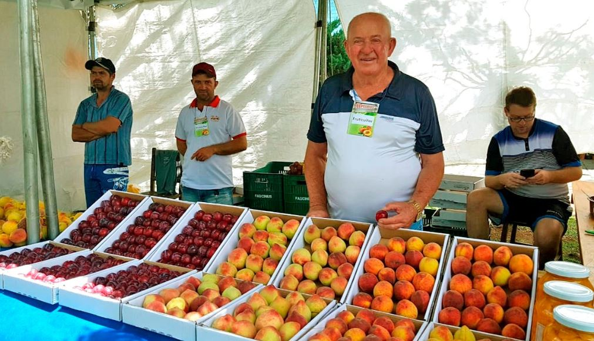
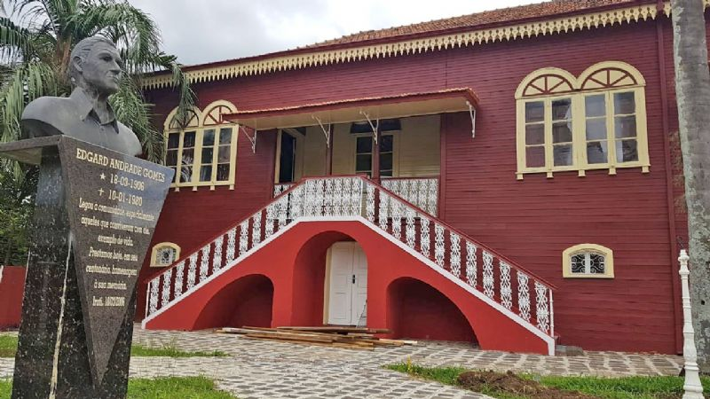
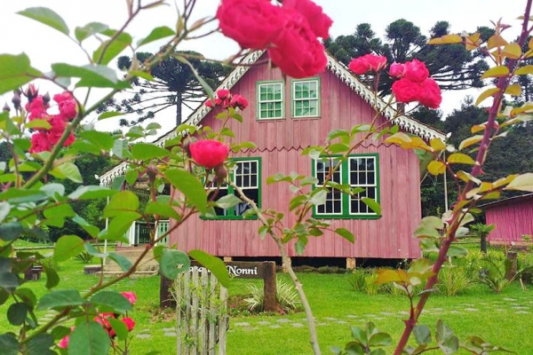
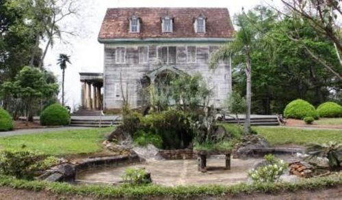
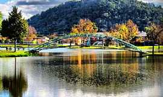

Irati apresenta uma grande variedade festiva, de acordo com a cultura dos povos colonizadores e tradições religiosas.
Tradicional, o evento que tem caráter espiritual de peregrinação, penitência e oração, mobiliza a comunidade católica ucraniana a participar de diversas atividades no belo distrito do Itapará. Via Sacra, Santa Missa e confissão são alguns dos momentos mais marcantes do dia dedicado à aproximação com Deus. Participar desta Via Sacra motiva milhares de pessoas a se deslocarem até Itapará todos os anos, no período de Quaresma. Muitos percorrem de ônibus os 50 quilômetros que separam o centro de Irati da sede do distrito. Lá, costuma prevalecer o sentido de comunhão, tanto nos rituais católicos ucranianos, como na convivência entre os fiéis. Tanto que a alimentação é comercializada a preços acessíveis, para que todos que quiserem possam participar.
Paixão de Cristo é uma peça teatral brasileira ensaiada e apresentada todos os anos, com base na Paixão de Jesus Cristo, que é celebrada todos os anos durante a Semana Santa na cidade de Irati, no estado do Paraná. A peça é encenada tradicionalmente ao ar livre reproduzindo os últimos passos de Jesus na Terra.
A cada ano, o rodeio de Irati reúne maior público, seja dos visitantes da região e do Paraná, ou das inúmeras delegações que vêm ao parque de eventos participar das provas. A realização é da Prefeitura, em conjunto com os CTGs locais Estância Jacumasso, Esteio da Esperança, Fazenda Neumann, Laço Velho, Missioneiro, Picasso Velho, Pousada de Tropeiro, Terra dos Pinheirais e XV de Julho.
A Festa é um evento tradicional de Irati e segue por uma semana com várias atrações para a população do município de Irati. Festa de São Cristóvão, Festa do Agricultor, Corrida de São Cristóvão, Bênção de Veículos e diversas Missas em Ação de Graças pelas Pastorais da Igreja
A tradicional Festa do Pêssego de Irati acontece todos os anos, no Parque Aquático e de Exposições de Irati. O evento conta não só com a comercialização de pêssego como também de ameixa e morango, e tem uma diversidade de atrações. Entre elas shows musicais, exposição de animais, mostra de artesanato, feira de sabores, feira de negócios, venda do borrego no rolete, praça de alimentação e a presença da rainha e princesas da festa.
A Casa da Cultura (Fundação Edgard & Egas Andrade Gomes) é um antigo casarão de madeira, que data das primeiras décadas do século passado, e que mantém todas as características impostas pela cultura urbana então vigente. Residência da família Gomes, foi construída em 1919, por Arcélio Batista Teixeira. O imóvel foi cedido à Prefeitura em forma de comodato pela família proprietária em dezembro de 1987, e doado à municipalidade em setembro de 2004. No local, ao longo dos anos, foi prestado apoio às atividades culturais promovidas por entidades diversas, promovendo a cultura nos diferentes níveis, oportunizando as manifestações artísticas nas diversas áreas, como artes plásticas, teatro, música e outras, tornando acessíveis as atividades artísticas a toda população.
Localizada em Pinho de Baixo, a antiga casa em madeira foi totalmente reconstruída após sua retirada de área central de Irati, anos atrás, e se transformou num espaço de grande riqueza histórica e cultural. Além disso oferece a vantagem do contato direto com a natureza e o ar puro do campo, favorecendo passeios com familiares e amigos.
A Casa da Fazenda Florestal, também chamada de Palácio do Pinho é uma mansão histórica do início do século XX, localizada no meio da Floresta Nacional de Irati, no estado do Paraná.
Inaugurado em 1989, o Parque Aquático continua sendo uma das principais referências do município. Além de um atrativo turístico, o espaço também é um ponto de encontro para as famílias e para todos os cidadãos iratienses.
